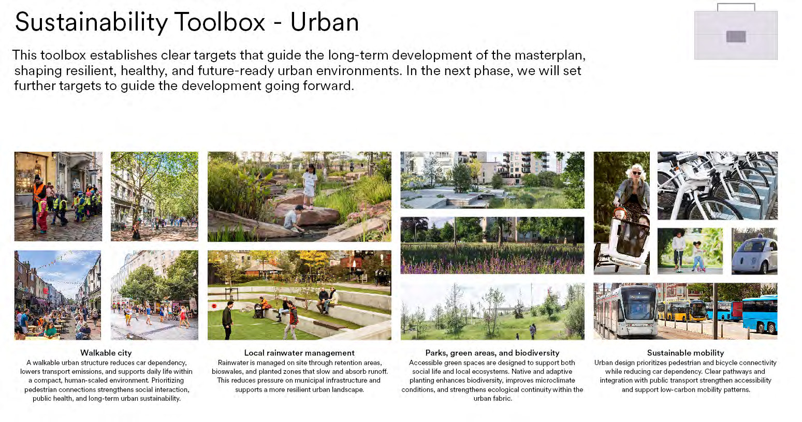
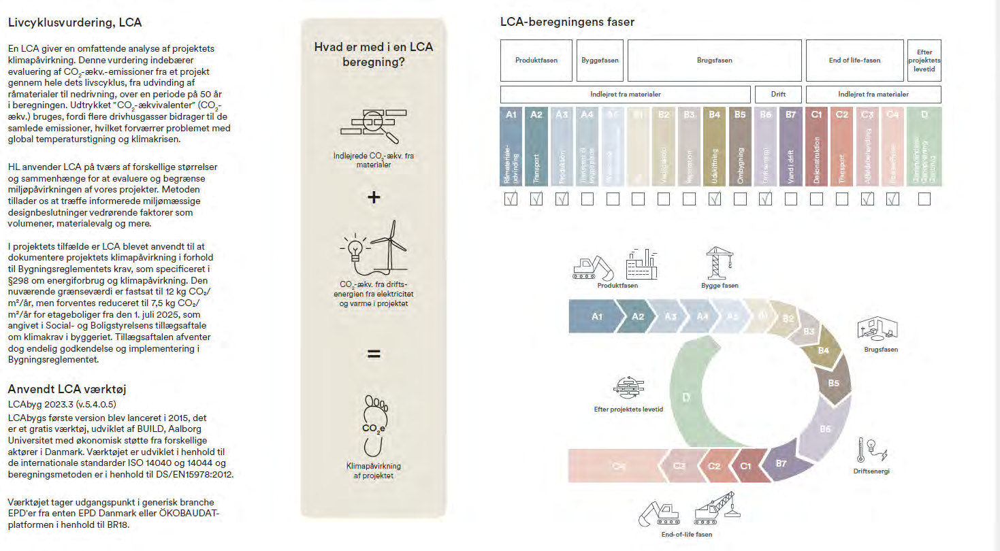
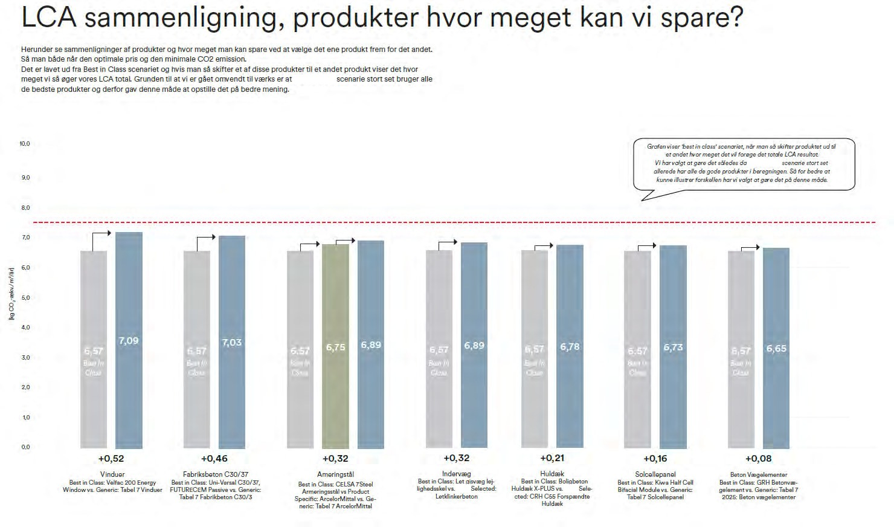
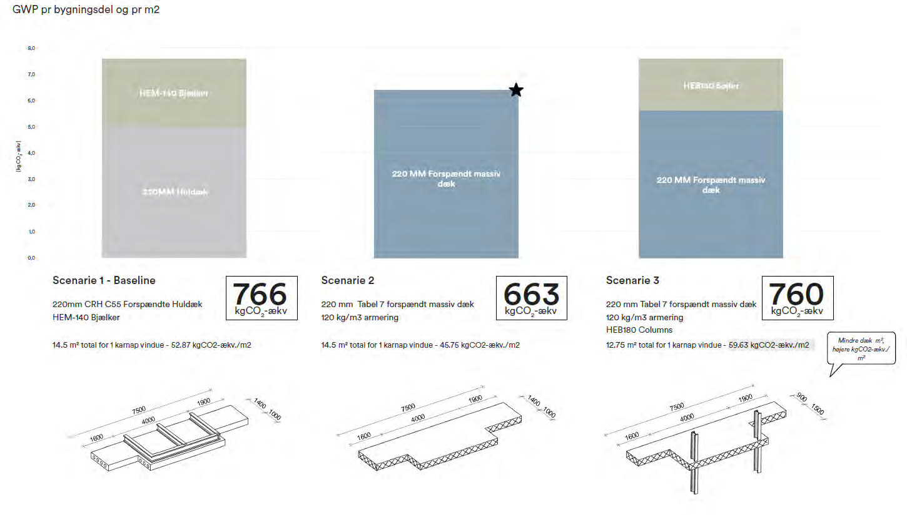
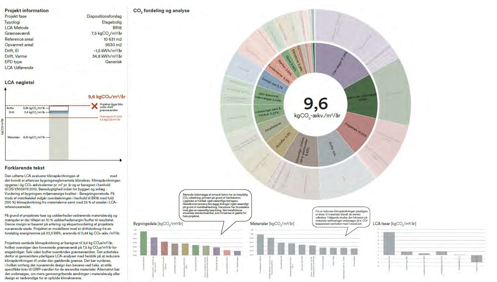
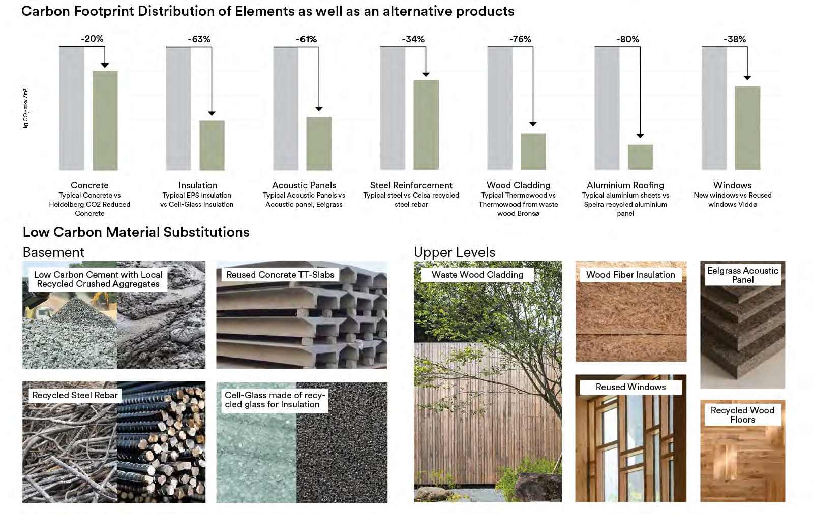
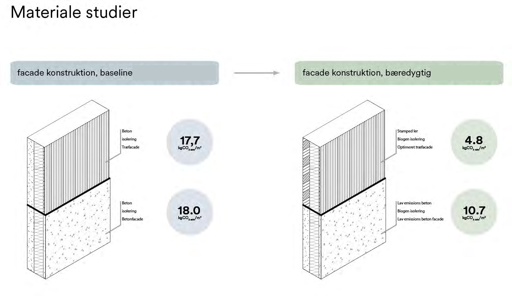
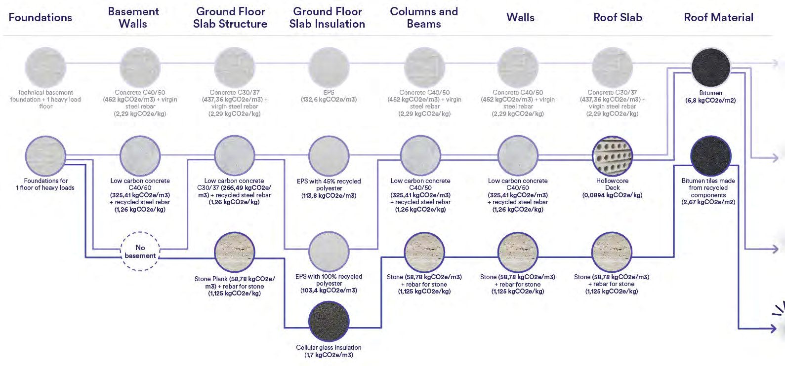

Sustainability Studies, Henning Larsen

- Role
- Sustainability and LCA Intern
- Office
- Henning Larsen, R&D department
- Location
- Copenhagen
- Tools
- LCAbyg, One Click LCA
- Framework
- Danish BR18 LCA requirements
Bringing carbon numbers into the design process, from competitions to built projects.
I worked across disciplines and project scales, carrying out LCAbyg and One Click LCA analyses and helping design and engineering teams build carbon metrics and material reuse strategies into early concepts. I also supported sustainability documentation for the Danish BR18 LCA requirements.
Most of my work at Henning Larsen is covered by client confidentiality and company policy, so only a small selection of general studies can be shown here. Project-specific results, figures and drawings are not published.






